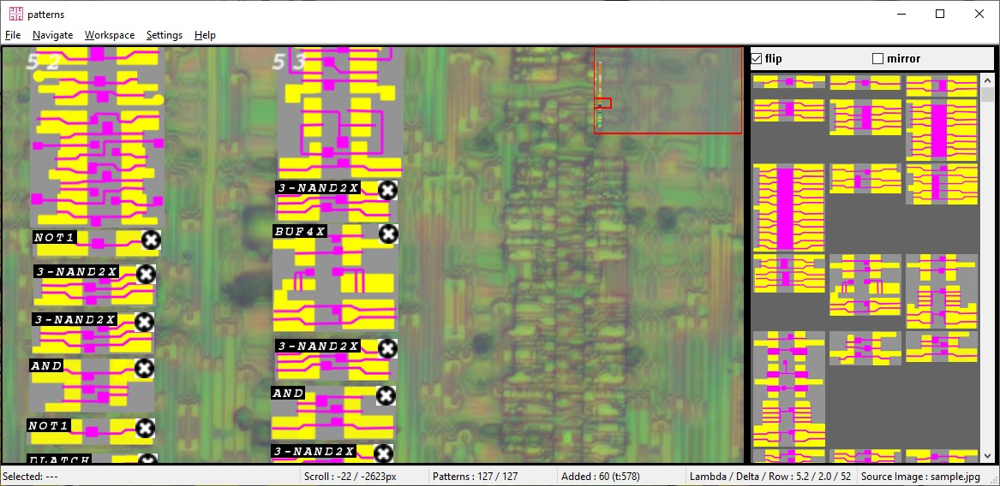
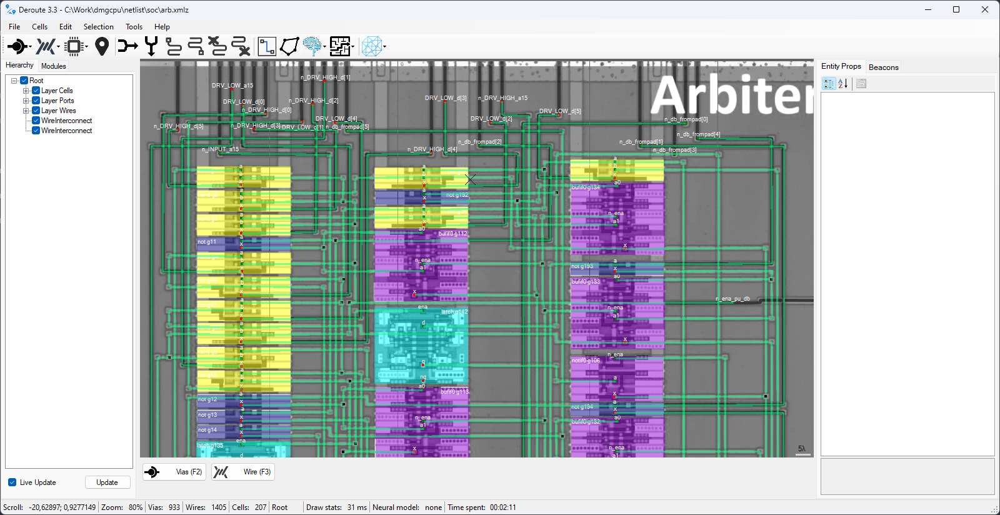
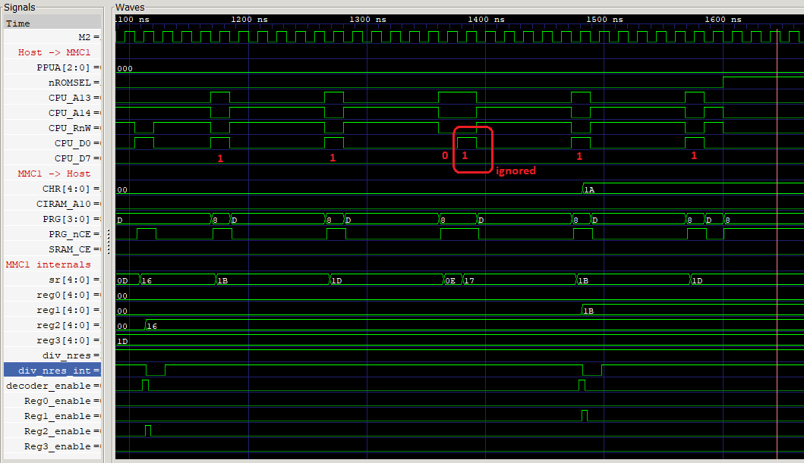
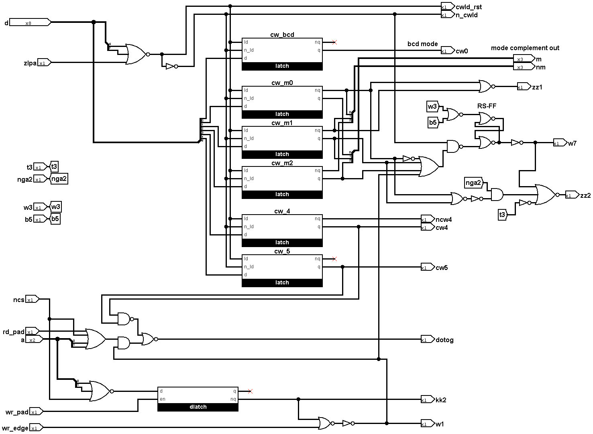

От кристалла к схеме
Практическая методика исследования новой микросхемы. Восемь этапов, на каждом — действие, сохраняемый результат и условие перехода дальше.
Как пользоваться
Начните с одного небольшого блока, для которого можно задать входы и проверить выходы. Пройдите весь цикл до работающей проверки, затем расширяйте область исследования. Для большой микросхемы разные блоки могут одновременно находиться на разных этапах.
Маршрут: паспорт → снимки → карта → элементы → соединения → модель → проверка → публикация. Если проверка расходится с наблюдением, возвращайтесь к первому недоказанному соединению, элементу или предположению о времени.
Это самостоятельное обобщение материалов девяти проектов emu-russia. Практики проектов снабжены ссылками; предлагаемые ниже карточки, порядок проверок и критерии готовности — рекомендации этой методики. Они не означают, что каждый исходный проект уже прошёл весь маршрут. Срез источников и границы изучения указаны в обзоре.
Выберите глубину исследования
| Цель | Что нужно получить | Чего этого результата не доказывает |
|---|---|---|
| Понять один узел | Фрагмент снимка, схема, назначение сигналов, проверенный сценарий | Работоспособность остальных блоков |
| Восстановить структуру | Транзисторы или ячейки и все соединения выбранной области | Корректность модели времени и аналоговых эффектов |
| Получить исследовательскую модель | Поведение схемы с явно записанными допущениями | Пригодность для FPGA или точность реального кремния во всех режимах |
| Сделать синтезируемую реализацию | Отдельная адаптация с проверкой относительно исследовательской модели | Автоматическую сохранность исходной топологии |
В breaks выбран подход die-perfect: HDL максимально следует исходной схеме; синтезируемость не является целью. В SEGAChips/Z80 применяется гибрид: межблочные шины размечаются вручную, домены ячеек восстанавливаются в Deroute. Выбор инструмента следует из устройства блока.
С чего начать сегодня
- Запишите точную маркировку и один вопрос: например, на каком фронте узел принимает запись.
- Найдите снимок нужной ревизии, выберите читаемую область с входом и выходом.
- Создайте карточку блока из этапа 8; неизвестные поля оставьте неизвестными.
- Восстановите короткий путь через один элемент и подготовьте один различающий гипотезы тест.
01. Определить объект и вопрос
Один паспорт исследования связывает корпус, кристалл, снимки и будущую модель.
На входе: экземпляр микросхемы или доступный датасет и исследовательский вопрос.
- Снимите маркировку корпуса, ориентацию первого вывода, обозначение на плате и маркировку кристалла, если она доступна. Запишите источник экземпляра и ревизию платы. Не подменяйте неизвестную ревизию наиболее распространённой.
- Соберите datasheet, pinout, схему включения и прежние исследования. Для каждого документа укажите, какую ревизию он описывает и откуда взят. Совместимость по выводам ещё не означает одинаковую внутреннюю разводку.
- Определите границу: весь чип, ядро, один канал, интерфейс или ячейка. Опишите наблюдаемые входы и выходы и то, что будет считаться ответом.
- Составьте таблицу покрытий: блок → доступные снимки → известные схемы → непонятные места → следующий эксперимент. Сначала берите узел с читаемой топологией и проверяемой функцией.
Почему это нужно. В mappers исследованный чип сначала назывался MMC1A; затем обозначение было исправлено на MMC1 без буквы. У PSXCPU отдельно рассматривается ревизия 90048; автор предупреждает, что разводку других ревизий может потребоваться восстанавливать заново. История исправления MMC1 приведена в источниках.
Сохранить: паспорт, список источников, границы блока, критерий проверки.
Можно дальше, когда: выбранные снимки относятся к установленной ревизии либо несовпадение явно отмечено; вопрос можно превратить в наблюдение. Если происхождение снимков неизвестно, сначала уточните его.
02. Получить и подготовить снимки
Сохраните исходные данные до обработки и до любого необратимого изменения образца.
На входе: паспорт, имеющиеся фотографии или план получения недостающих изображений.
Если готовый датасет отвечает вопросу, начните с него. Вскрытие и снятие слоёв нужны только там, где иначе не видно нужного соединения. Это разрушительные лабораторные операции: поручайте их подготовленному исполнителю с подходящим оборудованием и утверждённой процедурой безопасности. Старые описания «домашних» методов в источниках не являются проверенной инструкцией по безопасной работе; их химические и медицинские утверждения здесь не воспроизводятся.
- Разделите исходные кадры, сшитые изображения и рабочую разметку. Запишите образец, слой или сеанс обработки, объектив, ориентацию, порядок кадров и масштаб. Имена
lap1,lap2обозначают сеансы, а не гарантированно отдельные физические слои. - Снимайте регулярную сетку с перекрытием, достаточным для уверенной сшивки. Подберите его на пробном участке; проверьте фокус и сохранность контактов. Числа из чужой съёмки не переносите без проверки.
- Сшейте мозаику. В методах dmgcpu использован Fiji, Grid/Collection stitching, с указанием порядка сетки, размера, перекрытия и шаблона имён. При проблемах автор предлагает Hugin. Сохраняйте параметры и исходные кадры, чтобы можно было пересобрать мозаику.
- Проверьте стыки по непрерывным дорожкам и нескольким ориентирам в разных частях изображения. Раздвоение провода, исчезнувший контакт или смещение ряда требуют возврата к кадрам.
- Совместите изображения разных глубин. Рабочие «заплатки» из других сеансов храните отдельными слоями с указанием источника. Не закрашивайте догадкой отсутствующую фотографию.

Исходные кадры из dmgcpu. Перекрытия позволяют собрать общую систему координат; сама сшивка ещё не подтверждает связность проводов. Происхождение иллюстраций.
Сохранить: неизменённые кадры, мозаики, параметры сшивки, журнал обработки, карту непросматриваемых участков.
Можно дальше, когда: в выбранном блоке различимы нужные элементы и контакты, а совмещение проверено по всей его площади. В датасетах PSXCPU есть отдельный раздел Missing M1: часть слоя была потеряна при полировке. Это причина проверить полноту съёмки перед следующей обработкой.
03. Построить карту кристалла
Прежде чем разбирать каждый вентиль, определите слои, внешние связи и крупные области.
На входе: проверенная мозаика и сведения о корпусе.
- Зафиксируйте master dataset — рабочую картинку, к которой привязаны координаты. Опишите начало координат, ориентацию, единицы и преобразования остальных изображений.
- Составьте легенду слоёв и условных обозначений. Отличайте металл, поликремний, диффузию, контакты и пересечения без контакта. Цвет разметки — соглашение автора, а не физический признак.
- Обойдите пады: номер вывода → площадка → имя сигнала → направление → активный уровень. Проследите питание, землю, сброс и тактовые цепи. Сверьте хотя бы несколько опорных выводов со схемой платы.
- Отметьте массивы памяти, повторяющиеся ряды, декодеры, шины и нестандартные блоки. Предполагаемые функции подпишите как гипотезы. Физические границы прямоугольника не обязаны совпадать с логическим модулем.
- Выберите маленький блок и выпишите все пересекающие его границу сети, включая тактовые сигналы, питание и управляющие входы.

PSXCPU: регулярные массивы по краям помогают ориентироваться, но сами по себе не доказывают назначение блока. Изображение M2 опубликовано в датасетах.
Учитывайте технологию. В breaks описаны NMOS-чипы с одним слоем металла; у арбитра SEGA — специфическая организация двухслойных межсоединений и ячеек; ULA построена на биполярных транзисторах. Приёмы распознавания одной технологии нельзя автоматически переносить на другую. В ВИ53 даже одинаковые по функции каналы имеют разную топологию (PDF, с. 5–7).
Сохранить: карту блоков, легенду, таблицу падов и интерфейс первого блока.
Можно дальше, когда: каждое внешнее соединение выбранной области учтено, а неизвестные помечены. Если сигнал уходит за границу без понятного продолжения, расширьте область или заведите явный незавершённый порт.
04. Восстановить элементы
Выберите ручную транзисторную реконструкцию или библиотеку повторяющихся ячеек; смешивайте их внутри одного чипа, если это соответствует его устройству.
На входе: карта блока и читаемые изображения нужных слоёв.
Транзисторный путь
Для нерегулярной логики сначала восстановите геометрию проводящих областей, затворы и контакты; затем соединения транзисторов; затем логическую функцию. Проверяйте тип транзистора по технологии и окружению. Пересечение двух линий на снимке само по себе не доказывает ни транзистор, ни электрический контакт.
Отдельно отмечайте нагрузочные транзисторы, динамические узлы, предзаряд и двунаправленные пути. В ВИ53, с. 10 показан переход от цветных масок к транзисторной схеме, включая обозначение пересечения без соединения. Сопоставление с Intel 8253 помогло уточнить диффузию, но автор нашёл различия между чипами: аналог годится для проверки гипотезы, а не для слепого копирования.
Путь стандартных ячеек
- Для каждого нового типа найдите хорошо видимый экземпляр. Восстановите его транзисторы, порты, функцию и ориентацию. Для последовательностной ячейки запишите фронт или прозрачную фазу, сброс и полярности выходов.
- Добавьте в библиотеку снимок, стабильное имя, размер и масштаб. Не объединяйте визуально похожие варианты до проверки портов и функции: PSXCPU прямо предупреждает о похожих NOT2 и NAND2X.
- В Patterns загрузите JPEG и базу
patterns_db.txt, настройте Lambda для масштаба и Delta для допуска поиска. Выделите область и выберите подходящий шаблон. Проверьте flip/mirror и порядок портов на самом снимке. - Сохраните
.wrk, использованную версию базы и экспорт размещённых элементов. Это ускоряет распознавание типов и координат; провода остаются отдельной работой.

Слева — экземпляры на снимке, справа — библиотека. Подбор шаблона требует проверки ориентации и контактов. Источник: Patterns.
Сохранить: библиотеку с таблицей портов, разметку экземпляров, список неизвестных ячеек и проверку функции каждого использованного типа.
Можно дальше, когда: все элементы выбранного блока либо опознаны, либо обозначены как неизвестные с явными портами. Переименование базы требует миграции старых рабочих файлов: об этой несовместимости предупреждает ArbPatterns.
05. Восстановить соединения
Нетлист должен сохранять связь между каждым проводом на изображении и его представлением в модели.
На входе: master dataset, элементы, библиотека портов и интерфейс блока.
В dmgcpu последовательность явная: картинка → внешние порты → размещение ячеек → межсоединения → экспорт Verilog.
- Загрузите картинку в Deroute, установите Lambda и проверьте совпадение координат на нескольких удалённых ориентирах. Сначала сохраните маленькую сцену и убедитесь, что она правильно открывается снова.
- Разметьте внешние
ViasInput,ViasOutput,ViasInout; разместите ячейки и их именованные порты. Введите однозначные идентификаторы экземпляров и сетей. ИмяnRESETполезно только вместе с таблицей полярностей. - Прослеживайте каждую сеть между реальными контактами. Провод другого слоя не соединяется с ней без соответствующего перехода. Полуавтоматическое соединение крайних виасов, как в PSXCPU, требует отдельно учесть изгибы и промежуточные контакты.
- Проверяйте сеть обходом Traverse: от источника к потребителям и обратно. Проверьте отдельные выводы питания, открытые концы, пересечения и места с повреждённой фотографией. Случайный захват соседней сети означает возврат к геометрии.
- Сохраните XML/XMLZ и выполните Export to Verilog. Названия пунктов меню зависят от версии; демо MMC1 показывает полный путь загрузки сцены и экспорта. Прочитайте диагностические комментарии в полученном файле.

Пример отдельного блока: внешние порты и библиотечные ячейки соединены поверх master dataset. Источник: dmgcpu/netlist.
Экспортёр Deroute сообщает о безымянных портах ячеек, неподключённых портах, некоторых конфликтах драйверов и плавающих сетях. Эти проверки зависят от размеченных типов портов и не доказывают соответствие кремнию. Намеренную тристейт-шину нужно проверить по режимам разрешения драйверов; нельзя просто удалить «лишний» выход ради исчезновения сообщения.
Сохранить: редактируемую сцену, библиотеку, экспорт и перечень разобранных предупреждений.
Можно дальше, когда: все порты блока сопоставлены со снимком, каждое неизвестное соединение перечислено, экспорт собирается с определениями ячеек. Генерируемый Verilog не правьте как единственный источник истины: исправляйте сцену или библиотеку и повторяйте экспорт.
06. Построить исполняемую модель
Сначала сохраните структуру, затем повышайте уровень описания с проверкой каждой замены.
На входе: нетлист, функции элементов и список допущений.
- Подключите модели примитивов и маленький testbench. Явно задайте внешние входы, питание как логические константы там, где это допустимо, такты, процедуру старта и предел длительности симуляции.
- Проверьте примитивы: таблицу истинности для комбинаторных элементов; захват и удержание для защёлок; фронт, сброс и приоритеты для триггеров. Не заменяйте прозрачную защёлку триггером по фронту ради удобства.
- Отдельно опишите
X,Z, начальные состояния, предзаряд, удержание шины и силу драйверов, если они существенны. Запуск модели с принудительными нулями — допущение о старте, которое нужно указать в результате. - Получите схему из HDL и проверьте интерфейс, обратные связи и инверсии. Разделяйте плоский экспорт и обработанную модель. Храните соответствие старых сетей новым именам.
- Для аналогового выхода, динамического хранения или задержек, влияющих на функцию, укажите границу цифровой модели. Если вопрос касается напряжения или реальной длительности импульса, нужны измерения либо подходящая электрическая модель с обоснованными параметрами.

breaks: схема и HDL сохраняют структуру исходного узла. Это исследовательский выбор, описанный в HDL/Readme.
ULA показывает следующий уровень: большой нетлист делится на модули, некоторые обратные связи заменяются примитивами хранения. VCounter показывает исключения: разные разряды используют разные такты, сбросы и общие вентили. Разделение «по одинаковым битам» нужно доказывать по соединениям.
Сохранить: исходный нетлист, обработанную модель, модели ячеек, таблицу имён, testbench и допущения симуляции.
Можно дальше, когда: время в симуляции продвигается, наблюдаемые выходы меняются ожидаемо, необъяснённые X/Z разобраны. Компиляция или красивая схема сами по себе не являются проверкой поведения.
07. Проверить и уточнить
Проверка должна различать конкурирующие объяснения и приводить к конкретному месту схемы.
На входе: исполняемая модель, ожидаемое наблюдение и независимый источник сравнения, если он доступен.
| Уровень | Минимальная проверка | Что записать |
|---|---|---|
| Ячейка | Все комбинации небольшого элемента; захват/удержание для памяти | Входы, ожидаемый выход, фаза |
| Блок | Сброс, обычная операция, граничное событие | Стимул, контрольные точки, первая ошибка |
| Интерфейс | Чтение, запись, соседние циклы, разрешение драйверов | Такты, адрес, данные, управляющие сигналы |
| Система | Тестовая программа или полный цикл периферии | Контрольное состояние и ограничение времени |
| Соответствие | Сравнение с другим представлением или физическим измерением | Имена сигналов, полярности, выравнивание времени, различия |
Для каждого теста задайте проверяемое ожидание и тайм-аут. Сохраните команду, версию инструмента, модель, стимул, результат и VCD/FST с набором наблюдаемых сигналов. Картинка волн полезна для чтения, а численное сравнение или assertion — для повторения.

В MMC1 testbench выделен случай ignored-second-write. Такой граничный сценарий отличает проверку протокола от демонстрации обычной записи. Это иллюстрация из источника, не новый прогон данной методики.
Найдите первое расхождение
- Повторите ошибку на минимальном стимуле. Убедитесь, что ожидаемое значение относится к той же ревизии и моменту выборки.
- Сопоставьте названия и активные уровни. Пример отдельной таблицы соответствий — Breaks ↔ Visual 2C02.
- От ошибочного выхода двигайтесь к источнику: драйвер → логика → состояние → тактовая фаза → физический контакт.
- Исправьте самое раннее ошибочное предположение. Повторите падавшую проверку и затронутые сценарии. Если исправлено распознавание ячейки, перепроверьте её экземпляры.
Пример SM83. В журнале исследования условные RET сперва выглядели как ошибка полярности. Сравнение моделей выявило проблему времени; окончательное объяснение — пропущенная прозрачная защёлка, присутствующая в исходной схеме. Добавление произвольной задержки было отвергнуто. Не переносите зачёркнутую промежуточную гипотезу в финальную методику.
Граница доказательства. У ВИ53, с. 15 wr_edge.v проверяет полярность импульса с условными задержками, а не измеряет тайминг кристалла. У SM83 CPU-тесты используют Bogus_HW для окружения: их успех не подтверждает весь SoC. Совпадение двух моделей, полученных из одного ошибочного нетлиста, также не заменяет проверку по снимку или аппаратуре.
Сохранить: повторяемые тесты, результаты, первое расхождение и исправление с привязкой к схеме.
Можно дальше, когда: критерий из паспорта выполнен, ограничения указаны и другой исследователь может повторить проверку. Если результата нет, публикуйте частичное исследование с конкретным нерешённым вопросом.
08. Сохранить и передать результат
Исследование завершено в выбранной границе, когда можно восстановить ход доказательства, а не только открыть итоговую картинку.
На входе: снимки, схема, модель и проверка одного блока.
Соберите компактную цепочку: фрагмент кристалла → размеченные элементы → сеть → HDL → тест → вывод. Для картинок, экспорта и модели укажите совместимые версии. В breaks отдельно отмечено, что книги могут отличаться от Wiki, а HDL-документация предупреждает об отставании экспортированных схем: публикации нужно версионировать вместе.
Карточка нового блока
Скопируйте этот шаблон в исследовательский репозиторий и заполняйте по мере работы.
Блок / вопрос:
Чип, маркировка, ревизия:
Граница блока и проверяемый критерий:
Источник снимков, разрешение на использование:
Master dataset, масштаб, ориентация, координаты:
Нужные слои и недостающие области:
Порты: имя, направление, активный уровень, источник:
Библиотека ячеек и её версия:
Сцена / нетлист / модель:
Допущения: старт, X/Z, задержки, аналоговые эффекты:
Команда проверки, версия инструмента, стимул:
Ожидание / наблюдение / первая разница:
Подтверждено:
Гипотезы и способ их различить:
Следующий шаг:
Достаточный комплект
- Исходные данные или устойчивые ссылки, происхождение, разрешения и контрольные суммы.
- Редактируемые маски, сцены и библиотеки рядом с экспортами.
- Таблицы портов и имён, явные связи блоков и список неизвестного.
- Модель, testbench, команды, результаты и область доказанного поведения.
- Краткий текст на русском и английском с одинаковыми оговорками, подписями иллюстраций и ссылками.
Для большого датасета достаточно отдельного хранилища с манифестом; не добавляйте гигабайтные архивы в обычный Git по привычке. Имена каталогов произвольны, но роли исходника, разметки и производного файла должны быть понятны.
Проверка передачи: откройте комплект в чистом каталоге, проверьте пути к изображениям и библиотеке, повторите экспорт и один ключевой тест. В итоговом статусе перечислите проверенные блоки и оставшиеся вопросы, а не одно неопределённое «готово».

Схема слова управления из SovietChips — пример читаемого представления блока рядом с исследовательским PDF и Logisim-проектом. Наличие схемы не означает, что поведение всего таймера уже проверено. Обзор ВИ53.
Короткий словарь
| Термин | Значение здесь |
|---|---|
| Die / кристалл | Полупроводниковая часть внутри корпуса микросхемы |
| Master dataset | Выбранное изображение, к которому привязана рабочая разметка |
| Topology / топология | Геометрия слоёв и элементов на кристалле |
| Via / контакт | Переход между проводящими слоями; точный тип зависит от технологии |
| Net / сеть | Электрически соединённая группа контактов и проводов |
| Netlist / нетлист | Элементы, их порты и соединяющие сети |
| Cell / ячейка | Повторно используемый тип схемы; instance — конкретный экземпляр |
| Lambda | Масштаб координат в используемых инструментах; не универсальное значение в нанометрах |
| Latch / защёлка | Хранит значение, прозрачна в разрешённой фазе |
| Precharge / предзаряд | Предварительная установка заряда перед вычислением или чтением |
| X / Z | Неизвестное значение / высокоимпедансное состояние в цифровой модели |
| HDL | Язык описания аппаратуры; в этих проектах преимущественно Verilog |
| Testbench | Окружение, которое подаёт стимулы и наблюдает или проверяет модель |
Далее: девять проектов, их вклад, история и происхождение иллюстраций.